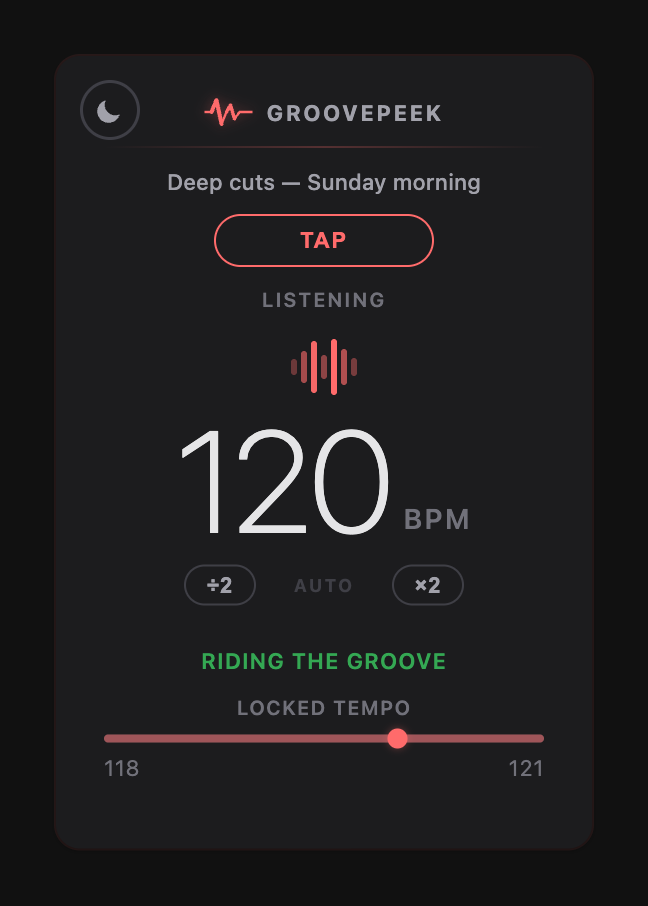
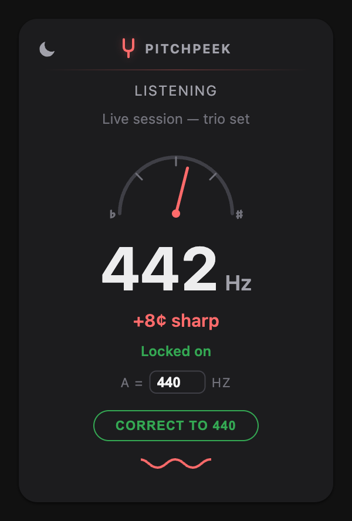

GroovePeek
Reads the tempo of whatever is playing and shows it as a live BPM, with a confidence label and a range bar so you know how settled the number is. Tap along if you want to check it against your own ear.

PitchPeek
Estimates the tuning reference a recording sits at — whether it was cut at A=440 or somewhere else — by measuring how far its tonal content drifts from the equal-tempered grid. Then it can pull the audio back to your reference so you can play along.

Both handle privacy the same way
Audio is captured from the tab, analyzed in memory, and discarded. Nothing is recorded, nothing is uploaded, and there is no analytics, telemetry, or tracking of any kind in either extension. The only things kept on your machine are small preferences — your theme, and in PitchPeek your chosen reference pitch, plus a short-lived note of any pitch correction still running.
GroovePeek privacy policy → PitchPeek privacy policy →